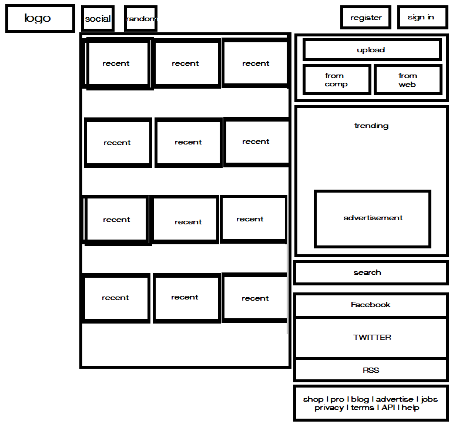

The website that I can chosen is imgur.com. The website provides easy image hosting. Just drag and drop any image into the imgur page on your browser and it will automatically upload with a very condensed URL. On account of this ease, the site now holds an enormous database of images - which brings about a visual challenge.
Typically with a database this large you want to be able to acess it with ease. However, if you go the home page, there is no immediately visible search bar. In fact, the search bar is located toward the bottom of the page on right side. This is actually something that has been mentioned on the imgur blog. Furthermore, the search bar itself is not as functional as, say, a Google search. So the challenge becomes as follows: moving the search bar to a more intuitive position, and optimizing the quality of the search function
